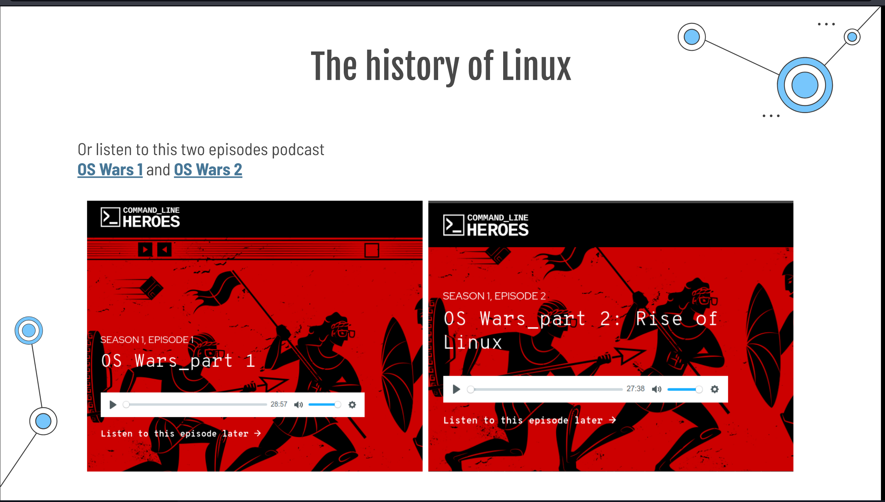
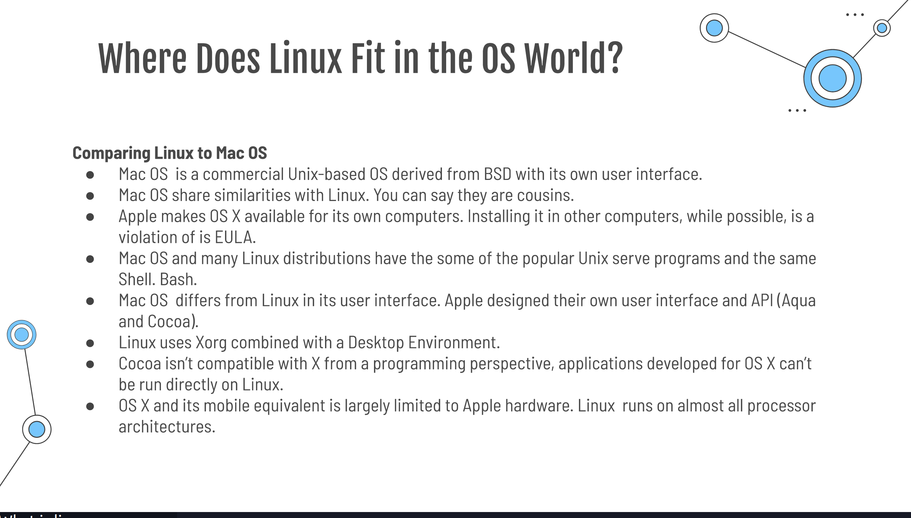
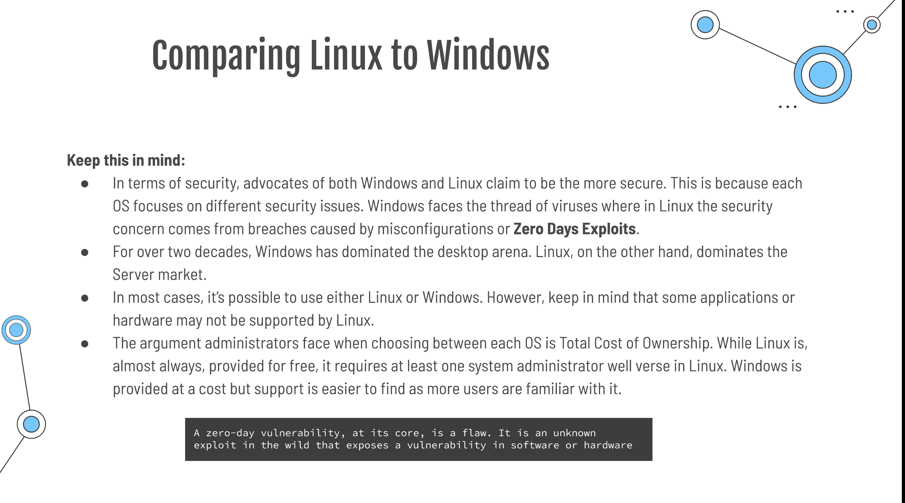
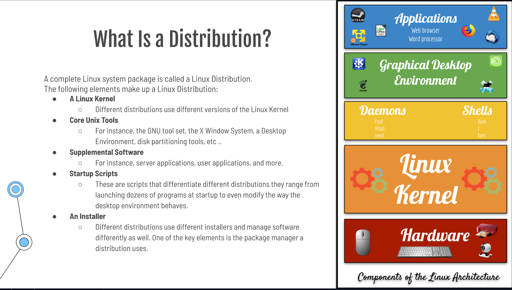
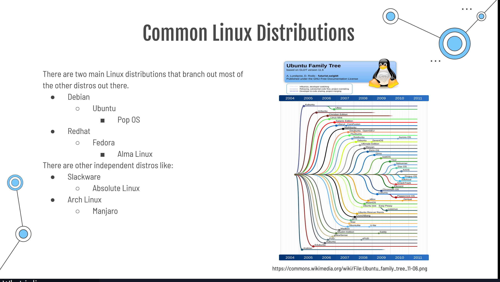
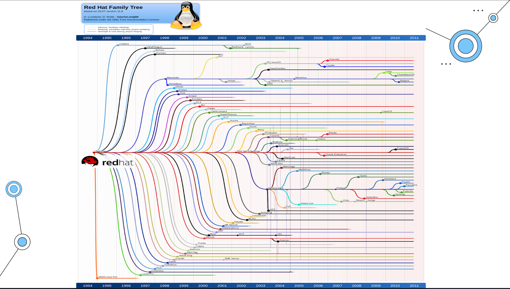
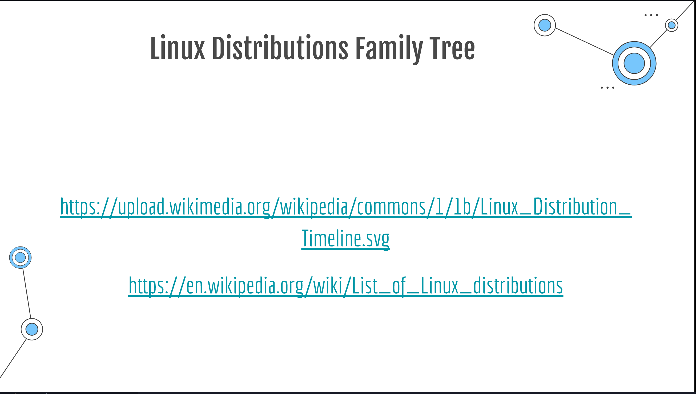
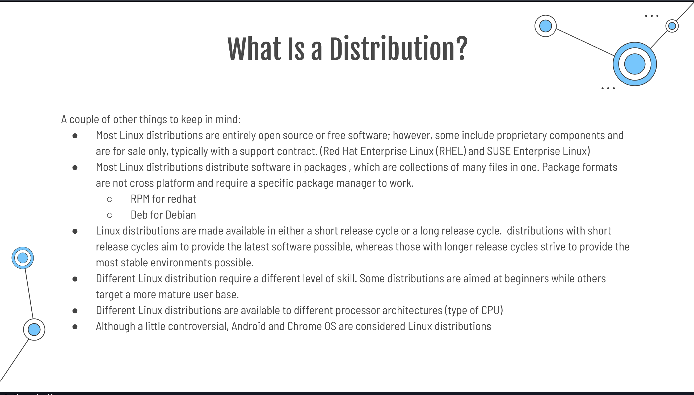
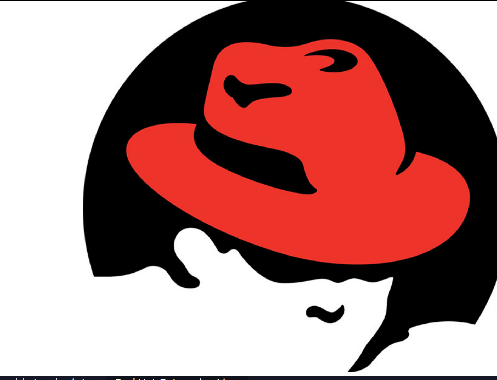

you should have a regular, non-root user with sudo privileges configured on your server. Additionally, you will need to enable a basic firewall to block non-essential ports. You can learn how to configure a regular user account and set up a firewall for your server
Linux is a Unix like Operating System popular in academic and business environments Linux consists of a Kernel Libraries ,and utilities that make up the entire operating system is also available in many distributions (any operating system that rand the linux kernel) popular Linux distributions include Arch,centos ,Debian ,fedora, openSUSE, Red Hat , Slackware , Ubuntu and many more.
Not to be confused with Linux kernel version history. Linux began in 1991 as a personal project by Finnish student Linus Torvalds: to create a new free operating system kernel. The resulting Linux kernel has been marked by constant growth throughout its history. Since the initial release of its source code in 1991, it has grown from a small number of C files under a license prohibiting commercial distribution to the 4.15 version in 2018 with more than 23.3 million lines of source code, not counting comments.   
there are tow main Linux distributions that branch out most of the other distorts out there
Debian
Ubuntu
Pop os
Redhat
Fedora
Alma Linux





Slackware Slackware aims for design stability and simplicity and to be the most "Unix-like" Linux distribution. It makes as few modifications as possible to software package.
Debian is an all volunteer organization dedicated to developing free software and promoting the ideals of the free software Community.** Fedora ** contains software distributed under various free and open-source licenses and aims to be on the leading edge of open source .
Debian based Linux Distributions Ubuntu:
is a Linux distribution freely available with both community and professional support. Kali Linux: is a Debian-derived Linux distribution designed for digital forensics and penetration testing. It is maintained. The standard Debian and its popular off shoot Ubuntu are great, all-around choices for a Linux system, but if you have more specialized needs, you might want a Debian alternative

Fedora: contains software distributed under various free and open-source licenses and aims to be on the leading edge of open source .
Open source software refers to the computer software which source is open means the general public can access and use. Closed source software refers to the computer software which source code is closes means public is not given access to the source code
Open Source: the software may be distributed for a free or free. the source code is distributed with the software.
Close Source: the software is not distributed with source code. the user is restricted from modifying the code.
Freedom 0: use the software for any purpose Freedom 1: examine the source code and modify it as you see fit Freedom 2: redistributed the Software Freedom 3: redistribute your modified software
class presentation lab 1 https://www.makeuseof.com/best-debian-based-linux-distros/ https://www.google.com/search?channel=fs&client=ubuntu&q=open+source+vs+closed+source course YouTube channel